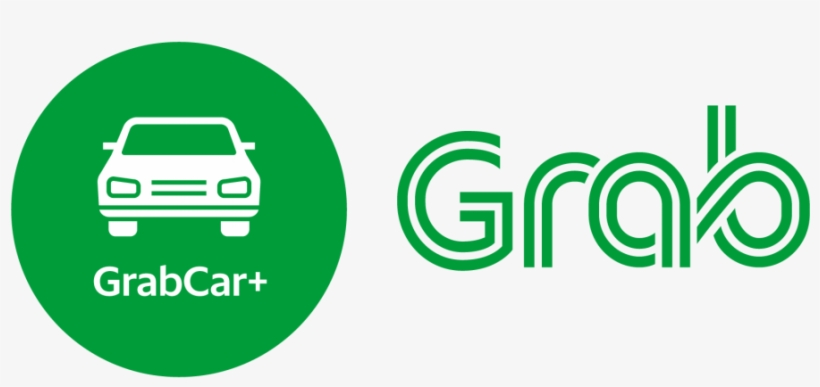
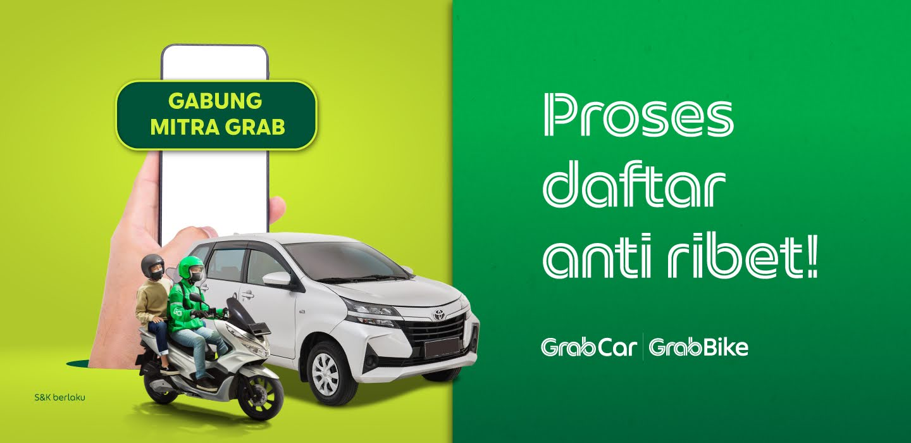
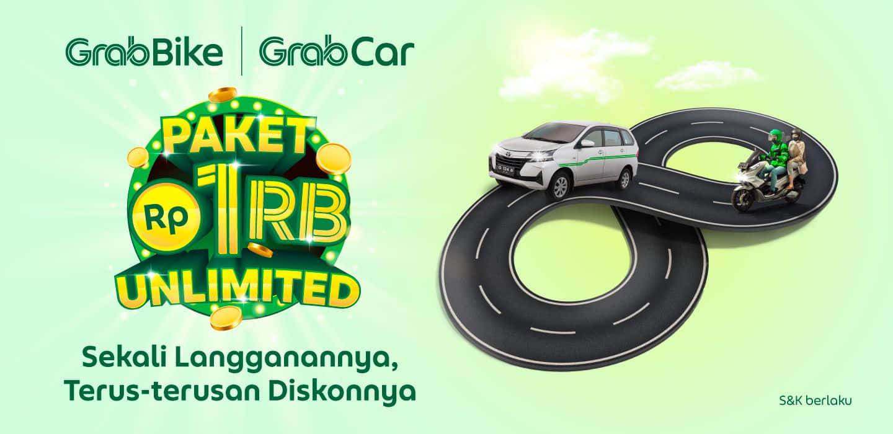

MITRA GRAB

Grab Indonesia – Bagaimana Proses untuk Menjadi Mitra Grab? Cari Jawabannya di Sini!
Jangan ragu, jangan bimbang. Proses pendaftaran menjadi Mitra Grab sangat mudah, lho! Anda bisa
melakukan pendaftaran secara online, bahkan mendapatkan pelatihan online bagi Mitra Pengemudi Grab yang baru! Jadi,
tidak perlu khawatir lagi karena kami akan membantu Anda menjadi Mitra Grab hingga seluruh pendaftaran selesai.
Cara daftar menjadi Mitra GrabCar maupun GrabBike bisa Anda lakukan dengan melengkapi dokumen berikut ini:
- Kartu Tanda Penduduk (eKTP) asli.
- Surat Izin Mengemudi (SIM) asli.
- Surat Tanda Nomor Kendaraan (STNK) asli.
- Buku Rekening atas nama pribadi.
- Surat Keterangan Catatan Kepolisian (SKCK) asli (bisa menyusul maksimal 2 minggu setelah akun aktif).
Setelah melengkapi dokumen, Anda dapat melengkapi syarat dan ketentuan mendaftar Mitra Grab berikut:
- Daftar online terlebih dahulu di Sini
- Dapatkan undangan melalui SMS/WhatsApp sebelum datang ke kantor Grab Excellence Center.
- Berusia maksimal 60 tahun.
- Usia kendaraan maksimal 8 tahun saat pendaftaran di Grab.
- Kendaraan yang berusia 5 tahun ke atas wajib membawa Sertifikat Lolos Uji Emisi asli.
- Wajib membawa semua dokumen asli dan masih berlaku.
Baca juga: Jadi Mitra GrabCar Pasti Bikin Anda Cuan Makin Lancar
Setelah menyelesaikan pendaftaran, Anda bisa masuk ke formulir aplikasi Anda untuk memeriksa status pendaftaran Anda
dan juga memeriksa apakah ada dokumen yang belum dilengkapi. Progress pendaftaran Anda juga akan diinformasikan melalui SMS dan Email.
Jika semua dokumen yang diperlukan telah lengkap, Anda akan menerima link online training ke GrabAcademy untuk menyelesaikan pelatihan Anda.
Mohon diperhatikan jika akan ada kemungkinan persyaratan pelatihan tambahan tergantung dari jenis layanan transportasi pilihan Anda (GrabBike atau GrabCar).
Anda harus menyelesaikan semua topik training yang tersedia di GrabAcademy. Lihat setiap video dan selesaikan kuis untuk membuka kunci topik berikutnya.
Setelah Anda menyelesaikan dan lulus Online Training, akun Mitra Grab Anda akan diaktifkan dalam 24 jam.
Setelah itu, Anda telah resmi menjadi Mitra GrabBike ataupun GrabCar dan siap melakukan perjalanan pertama Anda! Siap menjadi Mitra Grab? Daftar sekarang!

Tarif Bakal Naik, Grab Siapkan GrabBike Hemat dan Ngegas GrabCar
Grab berupaya untuk terus membantu terjaganya pendapatan mitra pengemudi,
dengan melakukan penyesuaian tarif untuk layanan transportasi, mulai 11 September 2022 pukul 00.01 WIB.
Pada waktu bersamaan, Grab juga mendukung agar pengeluaran konsumen lebih hemat, dengan memperkenalkan layanan GrabBike Hemat dan promo diskon Ngegas
GrabCar yang dapat dinikmati pengguna Grab di seluruh Indonesia selama periode yang ditentukan.
Kedua inisiatif tersebut diharapkan membantu meringankan beban ekonomi masyarakat di tengah kondisi yang dinamis saat ini.
Penyesuaian tarif dijalankan menyusul penetapan aturan baru tarif transportasi online yang terangkum dalam KP No 667 Tahun 2022, tentang Pedoman Perhitungan
Biaya Jasa Penggunaan Sepeda Motor yang Digunakan untuk Kepentingan Masyarakat yang Dilakukan dengan Aplikasi.
Besaran penyesuaian tarif telah dihitung secara saksama sesuai dengan aturan pemerintah, namun juga dirancang untuk menjaga kesejahteraan para mitra pengemudi di tengah kenaikan harga bahan bakar minyak (BBM), serta tetap menjaga kestabilan permintaan pasar terhadap layanan Grab.
Tarif baru untuk layanan GrabBike yakni, zona area tarif dasar minimum (0-4 kilometer), tarif per-kilometer Zona 1 Sumatera, Bali, dan Jawa (selain Jabodetabek) Rp8.000-Rp10.000, Rp2.000-Rp2.500
Kemudian, Zona 2, Jakarta, Bogor, Depok, Tangerang & Bekasi (Jabodetabek), Rp10.200-Rp11.200, Rp2.550-Rp2.800, dan Zona 3, Kalimantan, Sulawesi, Nusa Tenggara dan sekitarnya, Maluku & Papua, Rp9.200-Rp11.000, Rp2.300-Rp2.750.
Sebagai bagian dari upaya Grab dalam membantu mitra pengemudi dalam menghadapi dampak kenaikan harga BBM, penyesuaian tarif juga akan diberlakukan untuk layanan GrabCar dan layanan pengantaran, yakni GrabExpress dan GrabFood, serta akan ada penyesuaian untuk GrabElectric sesuai dengan layanannya masing-masing.
Berikut detail penyesuaian tarif untuk layanan GrabCar, GrabExpress, dan GrabFood. Layanan Kenaikan Tarif Dasar Minimum Tarif per-kilometer GrabCar hingga Rp2.000, GrabExpress hingga Rp1.000, dan GrabFood hingga Rp1.000. Dan kenaikan tarif dapat berbeda-beda di setiap kota.
Menyikapi penyesuaian tarif yang diberlakukan, Country Managing Director, Grab Indonesia, Neneng Goenadi menjelaskan, penyesuaian tarif serta kehadiran layanan GrabBike Hemat dan promo bagi konsumen merupakan upaya kami untuk tetap menawarkan pilihan layanan transportasi yang aman dan terjangkau.
"Ini adalah bentuk dukungan Grab terhadap konsumen setia kami sembari memastikan keberlangsungan pemasukan bagi para mitra pengemudi di tengah kondisi yang sarat perubahan seperti saat ini," ungkap Neneng, dalam keterangan tertulis, Minggu (11/9).
Neneng juga menjelaskan, layanan GrabBike Hemat juga dapat menjadi pilihan ekonomis masyarakat yang siap diandalkan untuk melayani perjalanan sehari-hari mereka.
“Layanan GrabBike Hemat yang menawarkan opsi tarif kompetitif untuk perjalanan jarak pendek diperluas untuk seluruh wilayah di Indonesia selama periode yang telah ditentukan,” jelasnya.
Bersamaan dengan perluasan cakupan GrabBike Hemat ke seluruh Indonesia, Grab juga menghadirkan Promo Diskon Ngegas GrabCar yang menawarkan potongan harga menarik untuk layanan GrabCar yang mulai berlaku hari ini.
Seperti layanan transportasi lainnya di Grab, berbagai fitur keamanan yang mumpuni diaplikasikan untuk memastikan keamanan, kenyamanan dan kualitas layanan yang lebih baik bagi para konsumen layanan GrabBike Hemat dan di Promo Diskon Ngegas GrabCar.
Kemudian, Fitur Tombol Keselamatan yang dapat digunakan dalam keadaan darurat, Fitur Bagikan Informasi Perjalanan yang memungkinkan pengguna untuk membagikan detail perjalanan kepada orang terdekat, Notifikasi 'Berhenti Tiba-Tiba' apabila perjalanan terindikasi berhenti lama, tidak sesuai jalur, hingga titik penurunan yang lumayan jauh dari titik tujuan awal.
Selain GrabBike Hemat, layanan GrabBike lainnya seperti GrabBike reguler hingga Grab Electric juga tersedia untuk mendukung mobilitas harian pengguna. (gus/saz)
Kembali Ke Halaman Utama
Copyright *Yudis* 2024